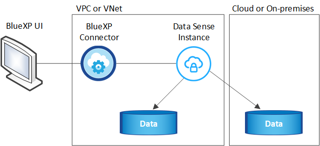

Demander de modifier un document
Demander de modifier un document Modifier sur GitHub
Modifier sur GitHub Guide des contributeurs
Guide des contributeursTout savoir sur le sens des données du cloud
Contributeurs
Cloud Data Sense est un service de gouvernance des données pour BlueXP (anciennement Cloud Manager) qui analyse vos sources de données sur site et dans le cloud de votre entreprise pour mapper et classer les données, et identifier des informations privées. Cela peut réduire les risques liés à la sécurité et à la conformité, diminuer les coûts de stockage et vous aider dans vos projets de migration des données.
Caractéristiques
Cloud Data Sense utilise l’intelligence artificielle (IA), le traitement du langage naturel (NLP) et l’apprentissage machine (ML) pour comprendre le contenu qu’il analyse afin d’extraire les entités et de catégoriser le contenu en conséquence. Cela permet à Data Sense de fournir les domaines de fonctionnalité suivants.
Préservez la conformité
Data SENSE fournit plusieurs outils qui peuvent vous aider dans vos efforts de conformité. Vous pouvez utiliser Data Sense pour :
-
Identifier les informations à caractère personnel
-
Identifier une vaste portée des données personnelles sensibles, conformément aux réglementations en matière de confidentialité, RGPD, CCPA, PCI et HIPAA.
-
Répondez aux demandes d’accès aux données (DSAR, Data Subject Access Requests) en fonction de votre nom ou de votre adresse e-mail.
-
Identifiez si des identificateurs uniques de vos bases de données se trouvent dans des fichiers d’autres référentiels, en faisant simplement votre propre liste de « données personnelles » identifiées dans les analyses de détection de données.
-
Avertir certains utilisateurs par e-mail lorsque des fichiers contiennent certains RP (vous définissez ce critère à l’aide de "Stratégies") de sorte que vous puissiez décider d’un plan d’action.
Renforcez la sécurité
Le sens des données permet d’identifier les données susceptibles d’être consultées à des fins criminelles. Vous pouvez utiliser Data Sense pour :
-
Identifiez tous les fichiers et répertoires (partages et dossiers) avec les autorisations ouvertes exposées à l’ensemble de votre organisation ou au public.
-
Identifiez les données sensibles qui se trouvent en dehors de l’emplacement initial dédié.
-
Respectez les règles de conservation des données.
-
Utilisez Policies pour avertir automatiquement le personnel de sécurité de nouveaux problèmes de sécurité afin qu’il puisse agir immédiatement.
-
Ajoutez des balises personnalisées aux fichiers (par exemple, "doit être déplacé") et affectez un utilisateur BlueXP pour que cette personne puisse posséder des mises à jour des fichiers.
-
Afficher et modifier "Étiquettes Azure information protection (AIP)" dans vos fichiers.
Optimiser l’utilisation du stockage
Data Sense fournit des outils qui peuvent vous aider dans votre coût total de possession (TCO) du stockage. Vous pouvez utiliser Data Sense pour :
-
Amélioration de l’efficacité du stockage grâce à l’identification des données dupliquées ou non liées à l’activité. Vous pouvez utiliser ces informations pour décider si vous voulez déplacer ou supprimer certains fichiers.
-
Supprimez des fichiers qui semblent non sécurisés ou trop risqués pour l’éviter dans votre système de stockage, ou qui ont été identifiés en double. Vous pouvez utiliser Policies pour supprimer automatiquement des fichiers qui correspondent à certains critères.
-
Réduisez les coûts du stockage en identifiant les données inactives que vous pouvez déplacer vers un stockage objet moins coûteux. "En savoir plus sur le Tiering des systèmes Cloud Volumes ONTAP". "En savoir plus sur le Tiering à partir des systèmes ONTAP sur site".
Accélérez la migration des données
Data Sense peut être utilisé pour analyser les données sur site avant de les migrer vers le cloud public ou privé. Vous pouvez utiliser Data Sense pour :
-
Permet d’afficher la taille des données et si l’une des données contient des informations sensibles avant de les déplacer.
-
Filtrez les données source (en fonction de plus de 25 types de critères) pour pouvoir déplacer uniquement les fichiers requis vers la destination. Les données inutiles ne sont pas déplacées.
-
Déplacez, copiez ou synchronisez uniquement les données requises dans le référentiel cloud de manière automatique et continue.
Sources de données prises en charge
Cloud Data Sense peut analyser et analyser des données structurées et non structurées à partir de plusieurs types de sources de données :
NetApp:
-
Cloud Volumes ONTAP (déployé dans AWS, Azure ou GCP)
-
Clusters ONTAP sur site
-
StorageGRID
-
Azure NetApp Files
-
Amazon FSX pour ONTAP
-
Cloud Volumes Service pour Google Cloud
Non NetApp:
-
Dell EMC Isilon
-
Pure Storage
-
Nutanix
-
Tout autre fournisseur de stockage
Cloud:
-
Amazon S3
-
Blob d’Azure
-
Google Cloud Storage
-
OneDrive
-
SharePoint Online
-
SharePoint sur site (SharePoint Server)
-
Google Drive
Bases de données:
-
Amazon Relational Database Service (Amazon RDS)
-
MongoDB
-
MySQL
-
Oracle
-
PostgreSQL
-
SAP HANA
-
Serveur SQL (MSSQL)
Data Sense prend en charge les versions NFS 3.x, 4.0 et 4.1 et CIFS 1.x, 2.0, 2.1 et 3.0.
Le coût
-
Le coût d’utilisation des données du cloud SENSE dépend de la quantité de données que vous scannez. Les 1 premiers To de données analysés par Data Sense dans un espace de travail BlueXP sont gratuits. Cela inclut toutes les données issues de tous les environnements de travail et de toutes les sources de données. Un abonnement à AWS, Azure, GCP Marketplace ou une licence BYOL de NetApp est requis pour continuer l’analyse des données après ce point. Voir "tarifs" pour plus d’informations.
-
Pour installer Cloud Data dans le cloud, il faut déployer une instance cloud, ce qui entraîne des frais supplémentaires du fournisseur cloud chargé du déploiement. Voir type d’instance déployé pour chaque fournisseur cloud. L’installation de Data Sense sur un système sur site est gratuite.
-
Cloud Data sens requiert que vous ayez déployé un connecteur BlueXP. Dans de nombreux cas, vous disposez déjà d’un connecteur en raison d’autres services et stockages que vous utilisez dans BlueXP. L’instance de connecteur entraîne des frais supplémentaires du fournisseur cloud sur lequel elle est déployée. Voir la "type d’instance déployé pour chaque fournisseur cloud". L’installation du connecteur sur un système sur site est gratuite.
Coûts de transfert de données
Les coûts de transfert de données dépendent de votre configuration. Si l’instance de Cloud Data SENSE et la source de données se trouvent dans la même zone de disponibilité et la même région, aucun coût de transfert de données n’est observé. Mais si la source de données, telle qu’un système Cloud Volumes ONTAP ou un compartiment S3, se trouve dans une autre zone ou région de disponibilité, vous serez facturé par votre fournisseur cloud pour les coûts de transfert de données. Consultez ces liens pour en savoir plus :
Instance Cloud Data SENSE
Lorsque vous déployez Data Sense dans le cloud, BlueXP déploie l’instance dans le même sous-réseau que le connecteur. "En savoir plus sur les connecteurs."

Voici la liste des éléments suivants pour l’instance par défaut :
-
Dans AWS, Cloud Data Sense s’exécute sur un "m5.4xlarge instance" Avec un disque GP2 de 500 Go. L’image du système d’exploitation est Amazon Linux 2 (Red Hat 7.3.1).
Dans les régions où m5.4xlarge n’est pas disponible, Data Sense s’exécute sur une instance m4.4xlarge au lieu de.
-
Dans Azure, Cloud Data Sense s’exécute sur un "Machine virtuelle standard_D16s_v3" Avec un disque de 512 Go. L’image du système d’exploitation est CentOS 7.8.
-
Dans GCP, Cloud Data Sense s’exécute sur un "n2-standard-16 VM" Avec disque persistant standard de 512 Go. L’image du système d’exploitation est CentOS 7.9.
Dans les régions où n2-standard-16 n’est pas disponible, Data Sense s’exécute sur une machine virtuelle n2d-standard-16 ou n1-standard-16.
-
L’instance s’appelle CloudCompliance avec un hachage (UUID) généré concaténé. Par exemple : CloudCompliance-16bb6564-38ad-4080-9a92-36f5fd2f71c7
-
Une seule instance de détection des données est déployée par connecteur.
-
Les mises à niveau du logiciel Data Sense sont automatisées tant que l’instance a accès à Internet.

|
L’instance doit rester en cours d’exécution à tout moment, car Cloud Data SENSE analyse en continu les données. |
Utilisation d’un type d’instance plus petit
Vous pouvez déployer Data Sense sur un système avec moins de processeurs et moins de RAM, mais il ya certaines limites quand l’utilisation de ces systèmes moins puissants.
| Taille du système | Caractéristiques | Limites |
|---|---|---|
Grand (par défaut) |
16 PROCESSEURS, 64 GO DE RAM, 500 GO DE SSD |
Aucune |
Moyen |
8 PROCESSEURS, 32 GO DE RAM, 200 GO DE SSD |
Numérisation plus lente et numérisation jusqu’à 1 million de fichiers uniquement. |
Petit |
8 PROCESSEURS, 16 GO DE RAM, 100 GO DE SSD |
Mêmes limites que « Moyen », plus la capacité d’identifier "noms des sujets de données" les fichiers internes sont désactivés. |
Si vous souhaitez utiliser l’un de ces systèmes plus petits, envoyez un e-mail à l’adresse ng-contact-data-sense@netapp.com pour obtenir de l’aide. Nous devons nous aider à déployer ces plus petites configurations cloud.
Pour déployer Data Sense sur site, il vous suffit d’utiliser un hôte Linux avec des spécifications moindres. Vous n’avez pas besoin de contacter NetApp pour obtenir de l’aide.
Fonctionnement du Cloud Data Sense
À un niveau élevé, Cloud Data sens fonctionne comme suit :
-
Vous déployez une instance de Data Sense dans BlueXP.
-
Vous activez la cartographie de haut niveau ou la numérisation de haut niveau sur une ou plusieurs sources de données.
-
La détection des données analyse les données à l’aide d’un processus d’IA.
-
Vous utilisez les tableaux de bord et les outils de génération de rapports fournis pour vous aider dans vos efforts de conformité et de gouvernance.
Fonctionnement des acquisitions
Une fois que vous avez activé Cloud Data SENSE et sélectionné les volumes, compartiments, schémas de base de données ou données utilisateur OneDrive ou SharePoint que vous souhaitez analyser, l’analyse des données démarre immédiatement pour identifier les données personnelles et sensibles. Il mappe les données de votre organisation, classe chaque fichier et identifie et extrait des entités et des modèles prédéfinis dans les données. Le résultat de l’analyse est un index des informations personnelles, des données personnelles sensibles, des catégories de données et des types de fichiers.
Le Data Sense se connecte aux données comme n’importe quel autre client en montant les volumes NFS et CIFS. Les volumes NFS sont automatiquement accessibles en lecture seule, tandis que vous devez fournir des identifiants Active Directory pour analyser les volumes CIFS.

Après l’analyse initiale, Data Sense analyse en continu vos données pour détecter les modifications incrémentielles (c’est pourquoi il est important de maintenir l’instance en cours d’exécution).
Vous pouvez activer et désactiver les analyses au niveau du volume, au niveau du compartiment, au niveau du schéma de la base de données, au niveau utilisateur OneDrive et au niveau du site SharePoint.
Quelle est la différence entre les acquisitions de mappage et de classification
Cloud Data SENSE vous permet d’exécuter une analyse générale « mapping » sur certaines sources de données. La cartographie ne fournit qu’une vue d’ensemble de haut niveau de vos données, tandis que Classification permet une analyse approfondie de vos données. Le mappage peut être effectué très rapidement sur vos sources de données car il n’accède pas aux fichiers pour voir les données à l’intérieur.
De nombreux utilisateurs apprécient cette fonctionnalité car ils souhaitent analyser rapidement leurs données afin d’identifier les sources de données qui nécessitent davantage de recherche. Ils ne peuvent ensuite activer des analyses de classification que sur les sources ou volumes de données requis.
Le tableau ci-dessous présente certaines des différences :
| Fonction | Classement | Mappage |
|---|---|---|
Vitesse de numérisation |
Lentes |
Rapides |
Liste des types de fichiers et de la capacité utilisée |
Oui. |
Oui. |
Nombre de fichiers et capacité utilisée |
Oui. |
Oui. |
Âge et taille des fichiers |
Oui. |
Oui. |
Exécution d’un "Rapport de mappage de données" |
Oui. |
Oui. |
Page Data Investigation pour afficher les détails du fichier |
Oui. |
Non |
Rechercher des noms dans les fichiers |
Oui. |
Non |
Création "stratégies" fournissant des résultats de recherche personnalisés |
Oui. |
Non |
Catégoriser les données à l’aide d’étiquettes AIP et de balises d’état |
Oui. |
Non |
Copier, supprimer et déplacer des fichiers source |
Oui. |
Non |
Possibilité d’exécuter d’autres rapports |
Oui. |
Non |
Informations fournies par Cloud Data Sense
Data Sense collecte, index et attribue des catégories à vos données (fichiers). Les données que les index Data Sense incluent les éléments suivants :
- Métadonnées standard
-
Cloud Data Sense collecte des métadonnées standard sur les fichiers : le type de fichier, sa taille, ses dates de création et de modification, etc.
- Données personnelles
-
Informations personnelles identifiables telles que les adresses électroniques, les numéros d’identification ou les numéros de carte de crédit. "En savoir plus sur les données personnelles".
- Données personnelles sensibles
-
Des types spéciaux d’informations sensibles, comme les données de santé, l’origine ethnique ou les opinions politiques, tels que définis par le RGPD et d’autres réglementations sur la confidentialité. "En savoir plus sur les données personnelles sensibles".
- Catégories
-
Cloud Data SENSE répartit les données analysées et les divise en différents types de catégories. Les catégories sont des rubriques basées sur l’analyse par IA du contenu et des métadonnées de chaque fichier. "En savoir plus sur les catégories".
- Types
-
Cloud Data SENSE affecte les données analysées et les divise par type de fichier. "En savoir plus sur les types".
- Reconnaissance de l’entité de nom
-
Cloud Data Sense utilise l’IA pour extraire les noms des personnes physiques des documents. "Découvrez comment répondre aux demandes d’accès aux données".
Présentation du réseau
BlueXP déploie l’instance Cloud Data Sense avec un groupe de sécurité qui active les connexions HTTP entrantes à partir de l’instance de connecteur.
Si vous utilisez BlueXP en mode SaaS, la connexion à BlueXP est assurée par HTTPS. Les données privées envoyées entre votre navigateur et l’instance Data Sense sont sécurisées par un cryptage de bout en bout, ce qui signifie que NetApp et des tiers ne peuvent pas les lire.
Les règles sortantes sont complètement ouvertes. Un accès Internet est nécessaire pour installer et mettre à niveau le logiciel Data Sense et pour envoyer des mesures d’utilisation.
Si vous avez des exigences de mise en réseau strictes, "Découvrez les terminaux hébergés dans le cloud Data et leurs contacts".
Accès des utilisateurs aux informations de conformité
Le rôle attribué à chaque utilisateur offre différentes fonctionnalités dans BlueXP et dans Cloud Data Sense :
-
Un Account Admin peut gérer les paramètres de conformité et afficher les informations de conformité pour tous les environnements de travail.
-
Un Workspace Admin peut gérer les paramètres de conformité et afficher les informations de conformité uniquement pour les systèmes auxquels ils disposent d’autorisations d’accès. Si un administrateur d’espace de travail ne peut pas accéder à un environnement de travail dans BlueXP, il ne peut pas voir d’informations de conformité pour l’environnement de travail dans l’onglet Data Sense.
-
Les utilisateurs disposant du rôle Compliance Viewer peuvent uniquement afficher les informations de conformité et générer des rapports pour les systèmes auxquels ils sont autorisés à accéder. Ces utilisateurs ne peuvent pas activer/désactiver la lecture des volumes, compartiments ou schémas de base de données. Ces utilisateurs ne peuvent pas non plus copier, déplacer ou supprimer des fichiers.